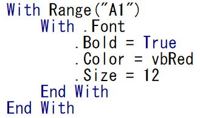

第51回.Withステートメント

With ステートメントを使う事で、
Withに指定したオブジェクトに対してオブジェクト名を再度記述することなく、プロパティやメソッドを記述することができます。
主語を一度書いたら、その後は主語を省略するような書き方になります。
Withの構文
With object
[statements]
・・・
End With
With～End Withの間では、
ピリオドから書き始めることでオブシェクト名を省略した書き方ができます。
Withを使ったときと使わない時の比較
オブジェクト.プロパティ = 値
オブジェクト.メソッド
このように記述するところを、
With オブジェクト
.プロパティ = 値
.メソッド
End With
このように.から書き始めることが出来るということです。
Withの使用例
Worksheets(1).Cells(1, 1) = 1
Worksheets(1).Cells(2, 1) = 2
これを、Withを使って書くと、
With Worksheets(1)
.Cells(1, 1) = 1
.Cells(2, 1) = 2
End With
このようになります。
つまり、
With～End Withの間では、
.で書き始めれば、.の前のWithのオブジェクトが省略できることになります。
Range("A1").Font.Bold = True
Range("A1").Font.Color = vbRed
Range("A1").Font.Size = 12
これを、Withを使って書くと、
With Range("A1")
.Font.Bold = True
.Font.Color = vbRed
.Font.Size = 12
End With
これは、さらに、
With Range("A1").Font
.Bold = True
.Color = vbRed
.Size = 12
End With
このように書く事も出来ます。
Withのネスト
With Range("A1")
With .Font
.Bold = True
.Color = vbRed
.Size = 12
End With
End With
Withがネストされている場合に、.の前の省略されているオブジェクトは、
直前（そのステートメントが含まれる最も内側）のWithステートメントに指定したオブジェクトになります。
ただし、
Withのネストは、可読性が悪いので多用するのは避けましょう。
Withを使ったときに気を付けるべき書き方
Sub sample1()
With Worksheets(1)
Debug.Print .Name
Worksheets.Add Before:=Worksheets(1)
Debug.Print .Name
End With
End Sub
イミディエイトウインドウには、
元々先頭にあったシートのシート名が2回出力されます。
Withの中では常に同じワークシートを参照しています。
つまり、
WithでWorksheets(1)と書かれていても、必ずしも1番目のシートを参照しているとは限らないという事です。
Sub sample2()
With Range("A1")
Debug.Print .Address
Rows(1).Insert
Debug.Print .Address
End With
End Sub
イミディエイトウインドウには、
$A$1
$A$2
このように出力されます。
Worksheets(1)と同じで、
WithでRange("A1")と書かれていても、必ずしもA1セルを参照しているとは限らないという事です。
Withで指定したオブジェクトの位置をずらすようなVBAコードは書いてはいけません。
このようなコードを書いてしまうと、後々判読不能なVBAとなってしまいます。
Withの使いどころ
With ワークシート
・・・
End With
このような形を意識して書き始めてみると良いでしょう。
タイピングが楽になり、また、文章の主語とも言えるオブジェクトを明確に意識してVBAを書き進められると思います。
先頭の「.」を書き忘れてしまう事でしょう。
これは、いくら注意しても、やってしまいます。
ただ、そのような間違いが多いと意識していれば、おのずと減らすことが出来るでしょう。
そして何より、そのVBAコードが読みやすくなります。
Withステートメントは、積極的に使うようにして下さい。
次回のオブジェクト変数とSetステートメントと合わせて、しかっりと使えるようになってください。
サイト内の参考ページ
同じテーマ「マクロVBA入門」の記事
第49回.Like演算子とワイルドカード
第50回.総合練習問題6
第87回.WorksheetFunction（ワークシート関数を使う）
第51回.Withステートメント
第52回.オブジェクト変数とSetステートメント
第53回.Workbookオブジェクト
第54回.Windowsオブジェクト
第55回.Worksheetオブジェクト
第56回.Rangeオブジェクト（RangeとCells）
第57回.Applicationのプロパティ（マクロ高速化と警告停止等）
第58回.コレクションとは（Collection）
新着記事NEW ・・・新着記事一覧を見る
VBA100本ノック 100本目：WEBから100本ノックのリストを取得｜VBA練習問題（3月3日）
VBA100本ノック 99本目：自動席替え（行列と前後左右が全て違うように）｜VBA練習問題（3月2日）
VBA100本ノック 98本目：席替えルールが守られているか確認｜VBA練習問題（3月1日）
VBA100本ノック 97本目：Accessデータを取得（グループ集計）｜VBA練習問題（2月27日）
VBA100本ノック 96本目：Accessデータを取得（マスタ結合&抽出）｜VBA練習問題（2月26日）
VBA100本ノック 95本目：図形のテキストを検索するフォーム作成｜VBA練習問題（2月24日）
VBA100本ノック 94本目：表範囲からHTMLのtableタグを作成｜VBA練習問題（2月23日）
VBA100本ノック 93本目：複数ブックを連結して再分割｜VBA練習問題（2月22日）
VBA100本ノック 92本目：セルの色を16進で返す関数｜VBA練習問題（2月20日）
VBA100本ノック 91本目：時間計算（残業時間の月間合計）｜VBA練習問題（2月19日）
アクセスランキング ・・・ ランキング一覧を見る
1.最終行の取得（End,Rows.Count）｜VBA入門
2.RangeとCellsの使い方｜VBA入門
3.変数宣言のDimとデータ型｜VBA入門
4.マクロって何？VBAって何？｜VBA入門
5.Range以外の指定方法（Cells,Rows,Columns）｜VBA入門
6.セルのコピー&値の貼り付け（PasteSpecial）｜VBA入門
7.繰り返し処理（For Next)｜VBA入門
8.セルに文字を入れるとは（Range,Value）｜VBA入門
9.マクロはどこに書くの（VBEの起動）｜VBA入門
10.とにかく書いてみよう（Sub,End Sub）｜VBA入門
このサイトがお役に立ちましたら「シェア」「Bookmark」をお願いいたします。
記述には細心の注意をしたつもりですが、
間違いやご指摘がありましたら、「お問い合わせ」からお知らせいただけると幸いです。
掲載のVBAコードは動作を保証するものではなく、あくまでVBA学習のサンプルとして掲載しています。
掲載のVBAコードは自己責任でご使用ください。万一データ破損等の損害が発生しても責任は負いません。